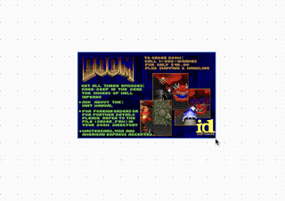
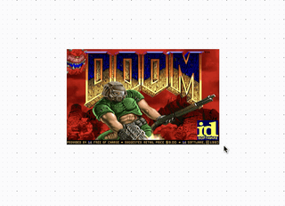
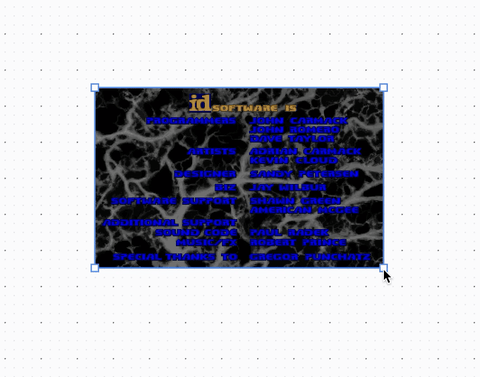

Tldraw - Can It Run Doom?
30 Dec 2024

Well yes, yes it can. I’m not even sure why I explored this but I did so I might as well write about it.
The Doom Source Code
After some brief research, it looked like compiling SDLDoom to WebAssembly was going to be the best way to approach this. If you’re unfamiliar with SDL, like I was at the beginning, it’s a library for low level access to audio, graphics, and input and it makes Doom easier to compile and run on modern operating systems.
So from libsdl’s Doom project I downloaded the original port and the doom1.wad file. I had never heard of a wad file before now but the best way I heard it explained is that it’s like a zip file for Doom’s assets.
I put the sdldoom-1.10 source at the top level in my source code, on the same level as the package.json. This isn’t too important, you can place it where you like but we do reference the path in other parts later so if you don’t place it in the same spot, you’ll have to update other paths later.
As far as the doom1.wad file, it needs to be accessible in the browser so where you place this depends on your application. For me, I’m using Vite so I placed it in the public directory. The generated WebAssembly will also need to be placed somewhere it can be served so make sure you have the capability to serve static files.
Emscripten
To compile to WebAssembly, we’re going to use emscripten. It should be fairly simple to use it to compile sdldoom to WebAssembly but we have to make some modifications to the C source first.
The first few changes are not really noteworthy, just includes that we need with emscripten so I’ll just list them off.
w_wad.c
After the other includes, on line 44-ish, add:
#ifdef __EMSCRIPTEN__
#include <alloca.h>
#endif
r_data.c
Before the #include "m_swap.h", on line 38-ish, add:
#ifdef __EMSCRIPTEN__
#include <alloca.h>
#endif
i_sound.c
After the #include "SDL_audio.h", and #include "SDL_mutex.h", it should look like:
#ifdef __EMSCRIPTEN__
#include "SDL_endian.h"
#else
#include "SDL_byteorder.h"
#endif
#include "SDL_version.h"
i_net.c
First, remove the following line:
#error You should hack this file for your BSD sockets layer
Then, after the three #endifs, we need to add a block for emscripten, on line 58-ish.
#ifdef __EMSCRIPTEN__
#include <sys/socket.h>
#include <netinet/in.h>
#include <arpa/inet.h>
#include <unistd.h>
#include <netdb.h>
#include <sys/ioctl.h>
#ifndef IPPORT_USERRESERVED
#define IPPORT_USERRESERVED 5000
#endif
d_main.c
This last one is a little more involved but first we have to add the emscripten header, on lilne 91-ish, after #include "d_main.h":
#ifdef __EMSCRIPTEN__
#include "emscripten.h"
#endif
Now, since this is going to be running in the browser, we need to make an adjustment to the game loop so that it uses requestAnimationFrame when compiled by emscripten.
First, we need to pull the update logic out of the loop and into a separate function because we’ll need to run the logic in a couple places.
The logic that we’ll need in this function is going to be copied directly from the game loop of the D_DoomLoop function. So from that function, copy the lines within the while(1) block, starting from I_StartFrame (); and ending at D_Display ();.
Then, above the D_DoomLoop function, create a new function, with the signature void UpdateFrame (void), and paste the lines you copied as its body.
Lastly, replace the entire while (1) loop in the D_DoomLoop function with:
#ifdef __EMSCRIPTEN__
emscripten_set_main_loop(UpdateFrame, 0, true);
#else
while (1)
{
UpdateFrame();
}
#endif
This will make sure that the loop works in the browser when compiled with emscripten.
Build Script
Ok, now that we have our source and the tools to be able to compile it, we need to create a build script. The build script is going to run the emscripten commands to build the C source and convert it to WebAssembly.
Let’s see what this is going to look like. We create a file at the root, on the same level as package.json, named build.sh and start off with
#!/bin/sh
to use the shell as an interpreter for the script.
Next, we have to change to the sdldoom directory that contains the source code we want to build. If you remember from earlier, this is at the root of the source code, at the same level as the build script so we can use
cd sdldoom-1.10
Next, we have to pass some flags to emscripten.
export EMCC_CFLAGS="-std=c89 -sUSE_SDL"
We use the C89 standard during compilation but more importantly, we tell emscripten to use the SDL library since we’re building sdldoom.
Next, we run emscripten’s versions of configure and make to compile the C source code.
emconfigure ./configure
emmake make
Now we’re finally ready to compile it to WebAssembly.
emcc -o index.js ./*.o --preload-file ../public/doom1.wad@./ -s ALLOW_MEMORY_GROWTH=1
The generated javascript is to be output to a file named index.js. We also have to pass in the path to the doom1.wad file, which is in our public directory that I mentioned earlier. Then, we use ALLOW_MEMORY_GROWTH=1 to allow WebAssembly memory to dynamically grow during runtime.
Note: If the path passed to --preload-file is not in the same directory as the source we’re compiling, we have to specify it as src@dst. So our source is in the public directory but we still want the output to be in the current directory since we move the generated files next.
Lastly, we need to move the generated files to a place where they can be served and accessed in the browser, which for me is the public directory.
mv index.* ../public
The files generated are named:
- index.data
- index.js
- index.wasm
These all need to be served as they contain data about the game assets, functionality, and how it interacts with the browser. If you have a chance, you should read over the index.js as it handles setting up event listeners and running the game loop.
Now you should try running the script. You’ll probably have to give it permission with chmod 755 build.sh but if you installed emscripten and its dependencies correctly, it should run and generate the files mentioned above.
If you have issues with this, make sure you have the correct tools installed and the modifications we made to the source code required to work with emscripten.
The TLDoomShape
At first, I had wanted to see if I could just create a custom style in the style panel that could be applied to any shape to turn it into Doom. From my research, I couldn’t find a way to do this without also creating a custom shape that knows how to use that style so we’ll just create a custom shape.
Custom Shape Boilerplate
First, we have to create a type definition for our shape. This is just going to be a minimal shape with a width and height, like so:
type ITLDoomShape = TLBaseShape<
"doom",
{
w: number;
h: number;
}
>;
Now let’s create our shape with its basic properties.
export class TLDoomShapeUtil extends ShapeUtil<ITLDoomShape> {
static override type = "doom" as const;
override canResize(): boolean {
return true;
}
indicator(shape: ITLDoomShape): React.ReactElement {
return <rect width={shape.props.w} height={shape.props.h} />;
}
getDefaultProps(): ITLDoomShape["props"] {
return {
w: 320,
h: 200,
};
}
getGeometry(shape: ITLDoomShape): Geometry2d {
return new Rectangle2d({
width: shape.props.w,
height: shape.props.h,
isFilled: true,
});
}
component(shape: ITLDoomShape) {
<HTMLContainer
id={shape.id}
style={{
display: "flex",
flexDirection: "column",
alignItems: "center",
justifyContent: "center",
pointerEvents: "all",
}}
>
</HTMLContainer>
}
}
This is mostly just custom shape boilerplate but we’ll go over each piece briefly.
-
The
typeproperty should match the name of the shape in the type definition, so in our case it’s"doom". -
The
canResizeoverride indicates that our shape is resizable. Resizing is an issue that we’ll discuss later. -
Thhe
indicatormethod just returns the svg box used when the shape is hovered over or selected. -
getDefaultPropsreturns the initial width and height of the shape. -
getGeometryreturns the shape’s geometry for hit-testing, binding, and doing other geometric calculations. -
The
componentis just like returning any other React functional component. We return aHTMLContainerwhich we’ll add our game to later.
Game Canvas
Next, we can add the canvas element that will render the game.
First, we’ll create a ref for it, which we’ll use to pass to the generated JavaScript so it can attach event handlers and draw the game to it.
const canvasRef = useRef<HTMLCanvasElement | null>(null);
Then, as a child of our HTMLContainer, add the canvas.
<canvas
id="canvas"
ref={canvasRef}
onContextMenu={(event) => event.preventDefault()}
style={{
backgroundColor: "black",
imageRendering: "pixelated",
}}
/>
While we have a ref to it, we also want to pass an id, so that we can access it outside of the component context, as we’ll see later.
Lastly, we have to let the game know about our canvas. The generated index.js provides several globals on the window object but it also looks for an important one if defined, window.Module. This can be thought of as a configuration for the game. If it’s not defined then it will be created by the script but even if we define it, more properties get added to it when the game is initialized. There’s some documentation about the properties that can be passed to it but it doesn’t seem like it has every option, or if the full documentation is in another spot. If you have time you should check out its properties when running the game to get more insight.
So, just to make sure this is only defined once when the custom shape is added, we’ll put it in a useEffect.
useEffect(() => {
window.Module = {
preRun: [
function () {
window.SDL.defaults.copyOnLock = false;
},
],
canvas: (function () {
return canvasRef.current;
})(),
};
}, []);
Notice that it just returns the ref to our canvas. Also there’s a preRun property we also define but I pulled that from another example, I’m still not sure what it does yet.
Adding The Generated Script
The game is instantiated and runs from the index.js script that was generated by emscripten. However, this doesn’t play well with React. Our options are to either add the script to the index.html that the React app is mounted to or to dynamically add it to the DOM. We don’t really want option 1 because there is a chance the shape is never used so it would be a waste to always have it.
We’re going to use a hook, useScript, that adds the script to the DOM and removes it when the component unmounts. This hook is actually from useHooks with the source here.
You can choose to add this package but I re-implemented it so it could be type safe. If you want to check out the Typescript version, it’s on this post’s GitHub repo.
Now, in our shape, below the useEffect that provides the window.Module options, add the generated index.js using this hook like so:
useScript("./index.js", { removeOnUnmount: true });
Note: Make sure you change the path to the index.js to suit your build environment. Since I’m using Vite, everything in the public directory is accessible at the root url so I can use "./index.js".
We pass the removeOnUnmount so that when the shape is deleted, the script is removed as well.
New Game
The TLDoomShape is complete and we’re almost ready to see it in action. We just have to add it to the tldraw toolbar so it can be created.
First, we have to define the tool which determines which shape it creates.
export class TLDoomShapeTool extends BaseBoxShapeTool {
static override id = "doom";
static override initial = "idle";
override shapeType = "doom";
}
By default, the tool is not selected and when it is used, it creates a shape with an id of "doom", which is our custom shape.
Next, we have to add it to the tools, which contains the display definition of the tool and what it does when it is clicked on.
const uiOverrides: TLUiOverrides = {
tools(editor, tools) {
tools.doom = {
id: "doom",
icon: "color",
label: "DOOM",
kbd: "d",
onSelect: () => {
editor.setCurrentTool("doom");
},
};
return tools;
},
};
Now to add it to the toolbar so it is displayed alongside the other tools. This is defined as a component override for the Toolbar. We create a menu item for it and then render the default toolbar items after it.
const components: TLComponents = {
Toolbar: (props: DefaultToolbarProps) => {
const tools = useTools();
const isDoomSelected = useIsToolSelected(tools["doom"]);
return (
<DefaultToolbar {...props}>
<TldrawUiMenuItem
{...tools["doom"]}
isSelected={isDoomSelected}
/>
<DefaultToolbarContent />
</DefaultToolbar>
);
},
};
Then, add the tool and custom shape to constants that will be passed to the Tldraw component.
const customShapeUtils = [TLDoomShapeUtil];
const customTools = [TLDoomShapeTool];
Finally, when we initialize tldraw, we pass our custom shape, tool, and components.
<Tldraw
shapeUtils={customShapeUtils}
tools={customTools}
overrides={uiOverrides}
components={components}
/>
Now you should finally be able to click on the left most tool in the toolbar, and click on the canvas to create an instance of the game. Using the arrow keys, you can move around the menu (although if you don’t click off the shape you’ll move the shape as well. I’ll touch on this later but briefly since I don’t have a good answer for it yet).
Resizing The Game
One of the nice things about making it a custom shape is that we can resize it like any other shape and ideally, the game would re-render at the new resolution. I wasn’t able to get that to work, but I think it can, I just don’t know enough about either emscripten or SDL, whichever one is responsible for resizing. Below I’ll go over what I tried.
So we defined canResize as true earlier with:
override canResize(): boolean {
return true;
}

But this doesn’t define what happens when it is resized so resizing currently doesn’t do anything. We need to override another method, onResize to define this functionality.
The most basic functionality within this function is calling tldraw’s resizeBox and returning that.
override onResize(
shape: ITLDoomShape,
info: TLResizeInfo<ITLDoomShape>
): ITLDoomShape | undefined {
const resized = resizeBox(shape, info);
return resized;
}
I also locked the aspect ratio with another override. You don’t have to do this but I like keeping the aspect ratio locked, at least while develping.
override isAspectRatioLocked(): boolean {
return true;
}

But this still doesn’t look like it’s doing anything because we also need to resize the canvas. Also, from what I see in the ./index.js file, I notice a function named setCanvasSize that will resize the canvas and I also see resize event listeners added to the canvas so my thought process is that resizing the canvas like this should update and re-draw the game at the new size.
override onResize(
shape: ITLDoomShape,
info: TLResizeInfo<ITLDoomShape>
): ITLDoomShape | undefined {
const canvas = document.getElementById("canvas");
if (!canvas) return;
const resized = resizeBox(shape, info);
window.Browser.setCanvasSize(resized.props.w, resized.props.h);
return resized;
}
Note: We have to use document.getElementById because this override is outside of the React component so we can’t use that ref we created for it.
If we try to resize now, you’ll notice that the canvas resizes, but not the game itself. If anyone has any ideas on how to fix this, I’d love to talk.

Next Steps
If I wanted to continue with this, some other ideas I would pursue would be:
- Actually have resize work.
- Don’t process click events for the custom shape when it’s not selected. I initially tried this with
stopImmediatePropagation()if the custom shape wasn’t in the ids of the selected shapes but I had issues removing the event listeners when they were no longer needed. - Multiplayer? It would be cool to have a single instance controlled by all users.